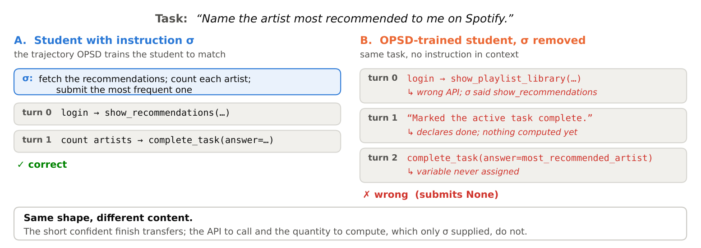
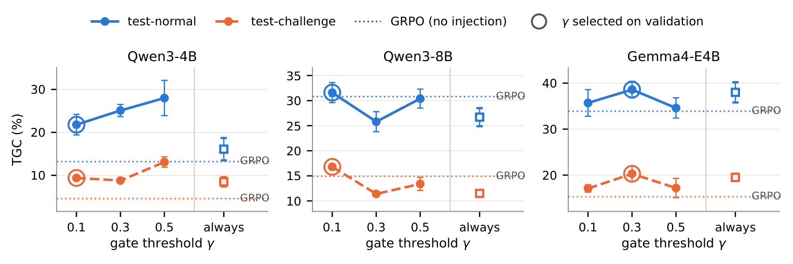
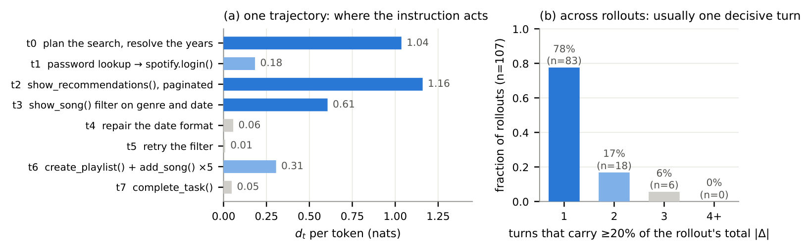
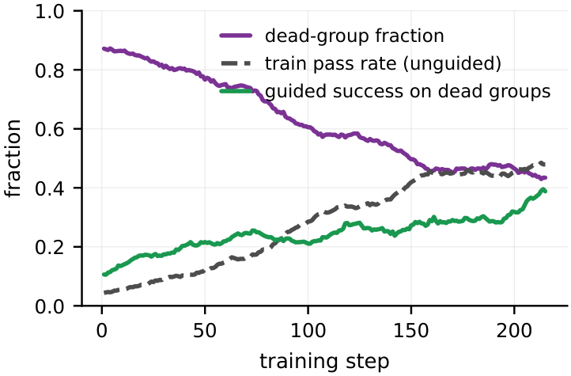

From Self-Distillation to Self-Practice: Privileged Information for Multi-Turn Agents
Abstract
On-policy self-distillation (OPSD) has become a popular recipe for post-training LLM agents. It supervises the agent model at the token level with a stronger teacher view of the same model, obtained by conditioning on privileged information (PI). In this work, we show that in multi-turn agents, this paradigm teaches the student to act with confidence but without the information behind it. The trained agent behaves as if it had privileged information it never observed, and its performance falls well short of plain RL, in the worst case below the untrained base model. Therefore, we propose Privileged Self-Practice (PSP), which keeps the PI and moves it from the loss to the sampler. When the student's rollouts on a task mostly fail, we inject a short per-task instruction written by an analyzer model, sample the task again with the instruction in context, and train on the result with an unchanged GRPO objective. The privileged information stays in the prompt and never enters the loss. Across AppWorld and SWE-bench Verified, with three different student models, PSP obtains the best average score in every setting and is the only method that consistently outperforms plain GRPO, with relative improvements over GRPO of 7% to 58% in average score across settings.
Why self-distillation from a privileged teacher fails
OPSD trains the student to match, token by token, the distribution of the same model conditioned on privileged information σ. The target depends on σ, which the student never sees, so the student can only learn the form of the teacher's steps, not the information that justified them. In a multi-turn agent every step is executed, so an unjustified step is not a harmless token error: it is a wrong API call, a premature "done", or a variable that was never assigned.

Matching the privileged view leaks its form but not its content. (A) With the instruction σ in context, the student solves the task in two turns. (B) The OPSD-trained student without σ reproduces the two-step shape and the closing call, but queries the wrong API, declares the task done before computing anything, and submits a variable that was never assigned.
Privileged Self-Practice
PSP keeps the privileged information but changes where it enters training. One training step works as follows.
- Roll out and gate. Each task is rolled out n times without any privileged information. If the group's success rate is at least γ, the group enters the GRPO update unchanged. With γ = 0.1 and n = 8, the gate fires exactly on the groups where every rollout failed, which is where GRPO has no gradient.
- Write an instruction. For a gated task, an analyzer model (Qwen3.6-27B, frozen) reads the group's own failed rollouts and one reference trajectory, and writes a short per-task instruction σ: a few rules about what to do, not a solution.
- Practice with it. The task is sampled again with σ prepended as a system message. This privileged group replaces the task's failed group, and the batch is trained with the unchanged GRPO objective, under the context each group was sampled from.
Nothing else changes: no distillation loss, no importance weight across views, no teacher-student KL. As the student learns to solve a task, its group stops being gated and training anneals back to plain GRPO on its own.
Results
Two benchmarks (AppWorld, SWE-bench Verified with the mini-swe-agent scaffold) and three students (Qwen3-4B, Qwen3-8B, Gemma4-E4B). All methods share the same privileged information and the same rollout budget; the only difference is how the privileged view is consumed. Scores are means over 5 evaluation seeds. The average column is the mean over the eight metrics on AppWorld (TGC, SGC, TGC@5, SGC@5 on test-normal and test-challenge) and over the four on SWE-bench (resolved and pass@5 for both students).
| Setting | Primary metric | GRPO | PSP | Avg, GRPO | Avg, PSP | Rel. gain |
|---|---|---|---|---|---|---|
| AppWorld, Qwen3-4B | test-normal TGC | 13.2 | 21.8 | 10.6 | 16.7 | +58% |
| AppWorld, Qwen3-8B | test-normal TGC | 30.8 | 31.6 | 25.6 | 27.4 | +7% |
| AppWorld, Gemma4-E4B | test-normal TGC | 33.9 | 38.6 | 27.2 | 32.5 | +19% |
| SWE-bench Verified, Qwen3-4B / 8B | resolved | 3.68 / 7.08 | 5.92 / 8.36 | 8.35 | 10.57 | +27% |
PSP obtains the best average score in every setting and is the only method that consistently outperforms plain GRPO. The margin is largest on the weakest student, where most training groups contain no success and GRPO has nothing to learn from. The full tables with all seven baselines are in the paper.

Effect of the gate threshold γ. Test TGC (mean ± std over 5 seeds) as γ varies. always removes the gate, trains both groups for every task and doubles the rollouts per step; it does not improve on the gated method and can fall below GRPO. Dotted lines mark GRPO; rings mark the γ selected on the validation set.
Why the gain transfers to the student without σ
The privileged rollouts are trained with σ in context, yet the agent is evaluated without it. Three measurements explain why the update still helps the unconditioned student: the instruction decides only one to three turns of a rollout, the remaining turns are ones the student could already have written, and the trajectory-level reward reinforces all of them. On those turns the gradients of the two views are aligned, so the update on the privileged view raises the non-privileged likelihood of the same rollout.

The instruction acts on a few turns; the reward reinforces all of them. (a) Per-turn dependence on σ for one successful rollout: large where σ decides the action, near zero where the student writes the same thing on its own. (b) Number of decisive turns across successful privileged rollouts on training tasks the base model does not solve: usually one, never more than three.

The guidance anneals itself. Gate telemetry on Qwen3-4B (γ = 0.1). The fraction of gated groups falls from 0.86 to 0.42 as the student's unguided train pass rate rises from 0.06 to 0.50. No schedule is involved: tasks leave the gated set as the student learns to solve them.
BibTeX
@article{su2026self,
title={From Self-Distillation to Self-Practice: Privileged Information for Multi-Turn Agents},
author={Su, Xingyu and Kumar, Abhishek and Ping, Qing and Luo, Youzhi and Buck, Jonathan and Zhang, Zach and Chidambaram, Subramanian and Arannil, Vinayak},
journal={arXiv preprint arXiv:2609.29051},
year={2026}
}